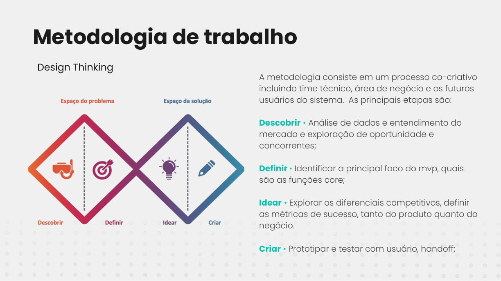
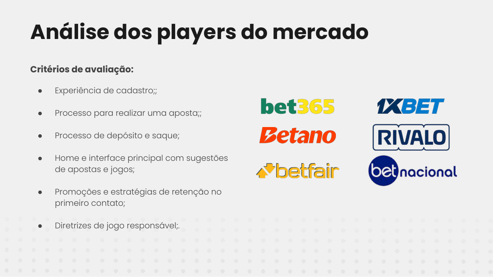
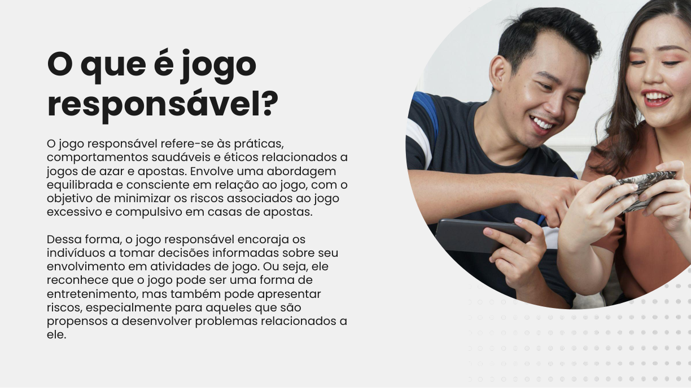
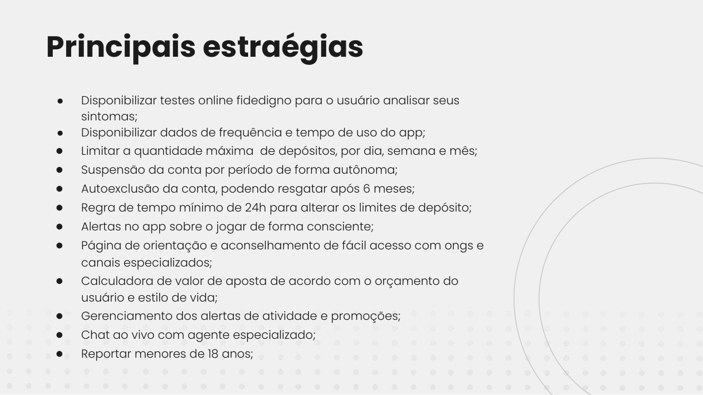

Uma categoria em crescimento com riscos que o produto não pode ignorar.
O estudo parte do avanço do iGaming e investiga como uma experiência digital poderia equilibrar aquisição, transações, descoberta de jogos e mecanismos de proteção ao usuário.
Case 03 · Estratégia + UX/UI
Um conceito de carteira digital para iGaming que coloca personalização, segurança e jogo responsável no mesmo problema de produto.
O estudo parte do avanço do iGaming e investiga como uma experiência digital poderia equilibrar aquisição, transações, descoberta de jogos e mecanismos de proteção ao usuário.
O processo foi estruturado com Design Thinking: pesquisa de mercado e concorrentes, definição das funções essenciais, exploração de diferenciais, princípios de sucesso e prototipação.
Além das funcionalidades de carteira e descoberta, o conceito inclui limites configuráveis, visibilidade de frequência e tempo de uso, pausa voluntária, autoexclusão, alertas de consciência e acesso facilitado a orientação especializada.
O protótipo explora recomendações, favoritos, resultados, categorias esportivas, saldo disponível, crédito de apostas, depósitos, saques e uma área de conta com controles de proteção.
O case demonstra minha capacidade de sair de uma leitura de mercado, estruturar princípios e oportunidades e materializar uma direção em interface. Por ser conceitual, não atribui métricas de conversão, retenção ou impacto real.




